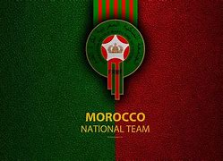

Het Marokkaanse voetbalteam, aka de 'Atlas Leeuwen', rockt serieus op het wereldtoneel. Die gasten brengen niet alleen voetbalskills, maar ook een flinke dosis passie en trots met zich mee.
Op het WK in Qatar laten de Atlas Leeuwen zich echt zien. De eerste match tegen Kroatië eindigde in een zinderende 0-0, waarbij onze jongens solide verdedigden. Maar toen kwam het moment tegen België, en man, wat een feest! 2-0 voor Marokko, een echte verrassing. Daarna tegen Canada een 2-1 overwinning, waardoor we de achtste finales haalden. Dat zegt toch wel wat over onze skills, toch?
En die fans, jongens, ze zijn on fire. Overal ter wereld staan mensen op om de Atlas Leeuwen aan te moedigen. In de stadions en op straat creëren ze een gekke sfeer met hun gezang en passie. Ze geven ons team dat extra zetje op het veld. Samen vormen ze een sterke gemeenschap die voetbal en nationale trots omarmt.

En dan heb je nog de Afrika Cup, dat andere grote voetbalfeest. Daar laten we zien dat we niet alleen op wereldniveau, maar ook op Afrikaans niveau serieus te nemen zijn. We strijden voor de eer en om de beste van het continent te zijn.
Samengevat, het Marokkaanse voetbalteam is niet alleen een stelletje goede voetballers, maar ook een bron van trots en eenheid. De Atlas Leeuwen blijven niet onopgemerkt, en wij blijven genieten van hun avontuur op het voetbaltoneel.
de atlas leeuwen zijn een unieke mix als we kijken naar de afkomsen meeste van onzet sterren zijn niet in marokko geboren dit maakte de band die tussen de noord-afrikanen zit nog een stuk specialer dan de andere.
de beste marokaanse voetballers
- achraf hakimi club:paris saint germain
- yassine bouno club:al hilal
- sofyan amrabat club: manchester united
- azzedine ounahi club: Olympique de Marseille
- hakim ziyech club:galatasary